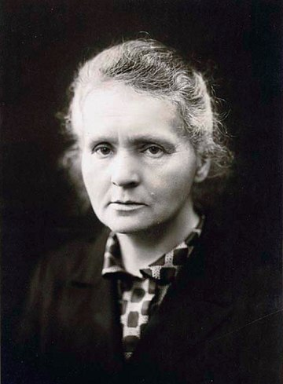

물리학 분야 위인

마리 퀴리 (Marie Curie)
- 분야
- 화학, 물리학
- 출생 및
사망 - 출생 > 1867년 11월 7일
사망 > 1934년 7월 4일 - 업적 요약
- 최초의 방사성 원소 폴로늄과 라듐을 발견했다.
- 업적 상세
- 1895년 남편인 피에르 퀴리와 공동으로 연구 생활을 시작하였다.
토륨도 우라늄과 마찬가지의 방사선을 방사한다는 것을 발견하고, 그것을 '방사능'이라 명명하였다.
또한 방사능이 원자 자체의 성질이라는 것을 알아냈다.
여러 가지 시료에 대하여 측정하던 중 우연히 우라늄 광물 피치블렌드가 우라늄 자체보다도 강한 방사능을 보인다는 것을 알고, 그 속에 미지의 강한 방사성 성분이 존재할 것이라고 추정, 이것의 추출을 시도하였다.
보헤미아의 요아힘스탈에서 산출되는 피치블렌드에서 방사되는 방사능을 바탕으로 화학 분석을 했다.(방사화학분석법의 시초)
1898년 7월 폴로늄을 발견하였고 이어 그해 12월 라듐을 발견하였다.
이 두 원소는 방사성 원소로서 발견된 최초의 것으로, 특히 라듐은 우라늄에 비하여 훨씬 강한 방사능을 가진다는 점에서 중요한 의미를 지닌다.
이 발견은 방사성 물질에 대한 학계의 관심을 불러일으켜, 새 방사성 원소를 탐구하는 계기를 만들었다.
이러한 업적으로 1903년 퀴리 부부는 베크렐과 함께 노벨 물리학상을 받았다.
남편이 사망한 뒤에도 단독으로 방사성 물질을 계속 연구하였다.
1907년 라듐 원자량을 더욱 정밀하게 측정하는 데 성공하고, 1910년에 금속 라듐을 분리하는 데도 성공하였다.
1906년 5월에는 최초의 여성 소르본 대학 교수가 되었고, 1914년 소르본 대학에서는 그녀가 연구에 더욱 집중할 수 있도록 라듐연구소를 건립하였다.
제 1차 세계대전 중 장녀 이렌과 함께 부상자 치료를 위해 뢴트겐 투사기를 보급하는데 노력하였고 많은 부상자들이 목숨을 구하였다.
이 공로를 인정받아 파리 의학아카데미의 회원이 되었다.
라듐연구소는 이후 파스퇴르 실험소와 퀴리 실험소가 되었는데, 그녀는 퀴리 실험소 소장으로서 프랑스의 과학 연구에 공헌하였다.
1911년 라듐과 폴로늄 발견으로 노벨 화학상을 받았다.
이후 연구소의 운영은 물리학자인 장녀 이렌에게 맡겼으며, 이렌은 마리 퀴리의 실험 조수로 있던 사람과 결혼한 뒤 1935년 남편과 함께 인공 방사능을 발견한 공로로 노벨화학상을 받았다.